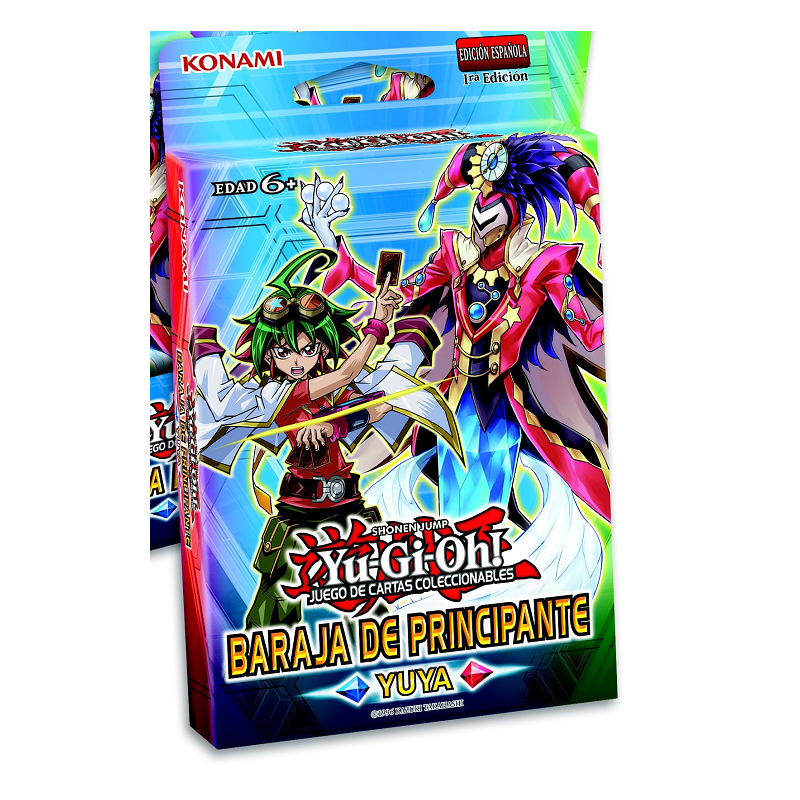
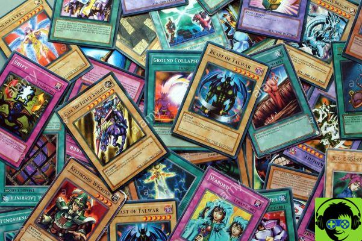

Consejos
Consejos para armar un deck
Para iniciarse no hay nada mejor que usar una Baraja de Principiante. Este tipo de Deck está pre-diseñado para que un Duelista novato se interiorice acerca de la mecánica básica de juego y puede conocer las diferentes clases de cartas, sus Atributos y como jugarlas correctamente.
Después de las Barajas de Principiante, los Duelistas principiantes pueden mejorar su juego conociendo las Barajas de Estructura. Estas contienen cartas con efectos mucho más específicos que las Barajas de Principiante y con una estrategia mucho más definida. Son ideales para perfeccionarse en aspectos más avanzados del juego como son la estrategia, combinación de efectos, cartas de soporte, contraataques y el uso de Tipos, Arquetipos, bonificaciones, etc.
Número de cartas adecuado
A la hora de montar un mazo, en el Deck Principal lo recomendable es llevar un mínimo y a veces máximo de 40 cartas. Ese consejo se aplica a la gran mayoría de arquetipos, aunque hay mazos que pueden necesitar de más cartas, por ejemplo de 50 cartas, como puede ser en mazos que sean mucho de descartar cartas.
Equilibra tu Deck
Lo recomendable es llevar en un mazo 20 Cartas Monstruos y 20 Cartas Mágicas/Trampas, aunque darse el caso de que se tenga que llevar más Mágicas y Trampas (como sucede en Artibruja) o viceversa.
Formas de Barajar por DarkCart 27